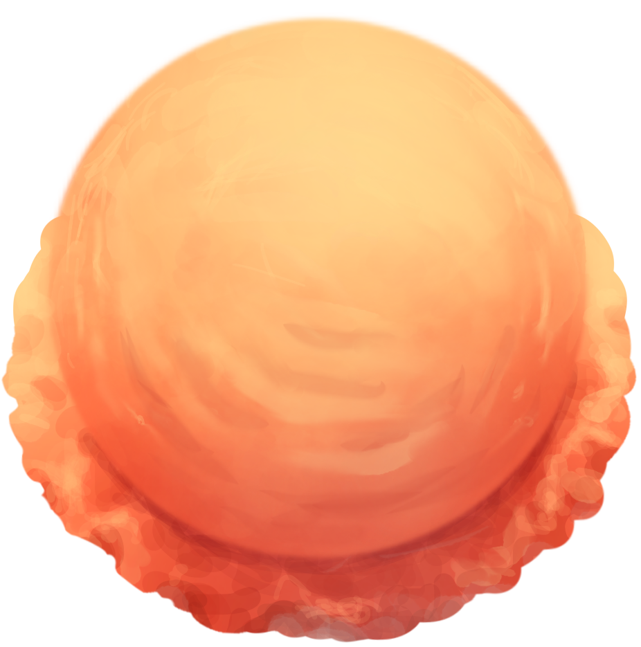
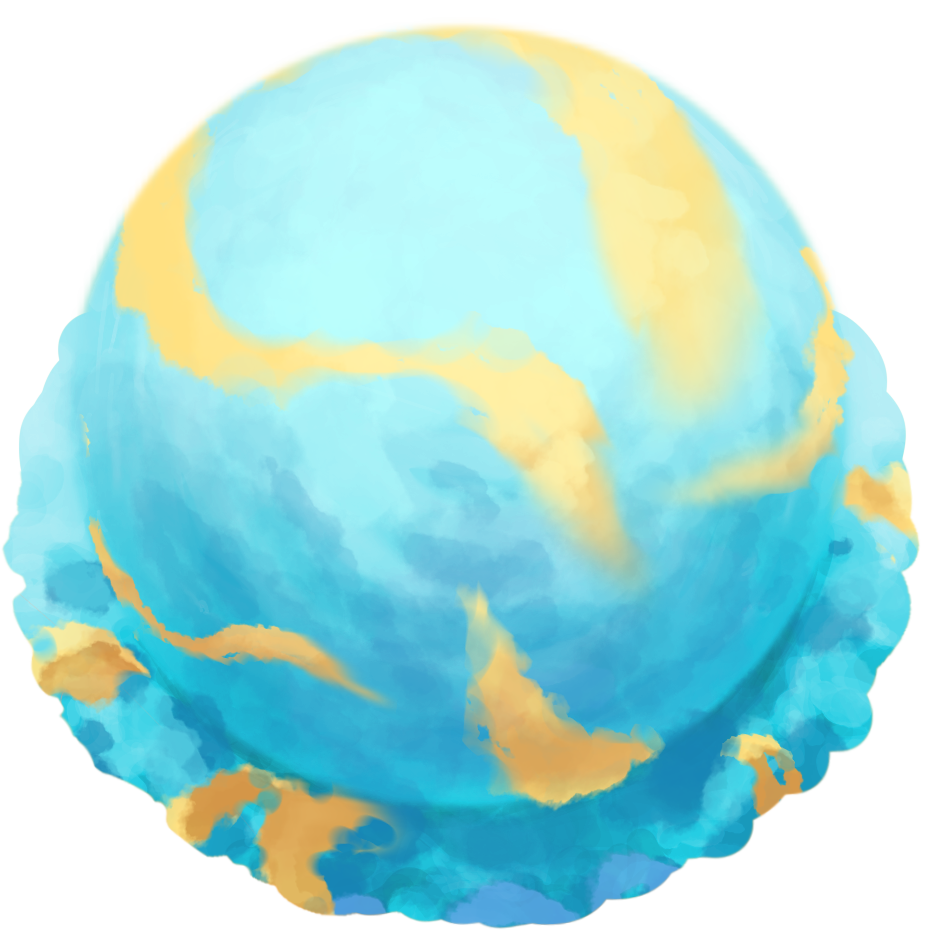
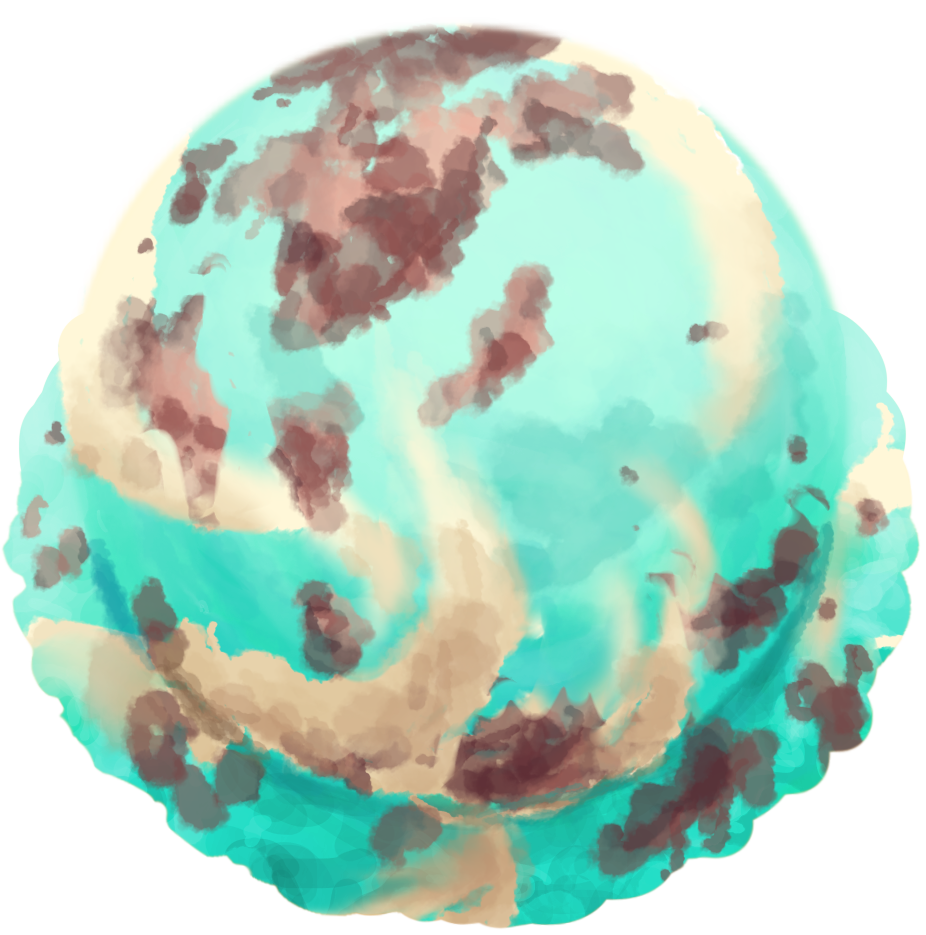
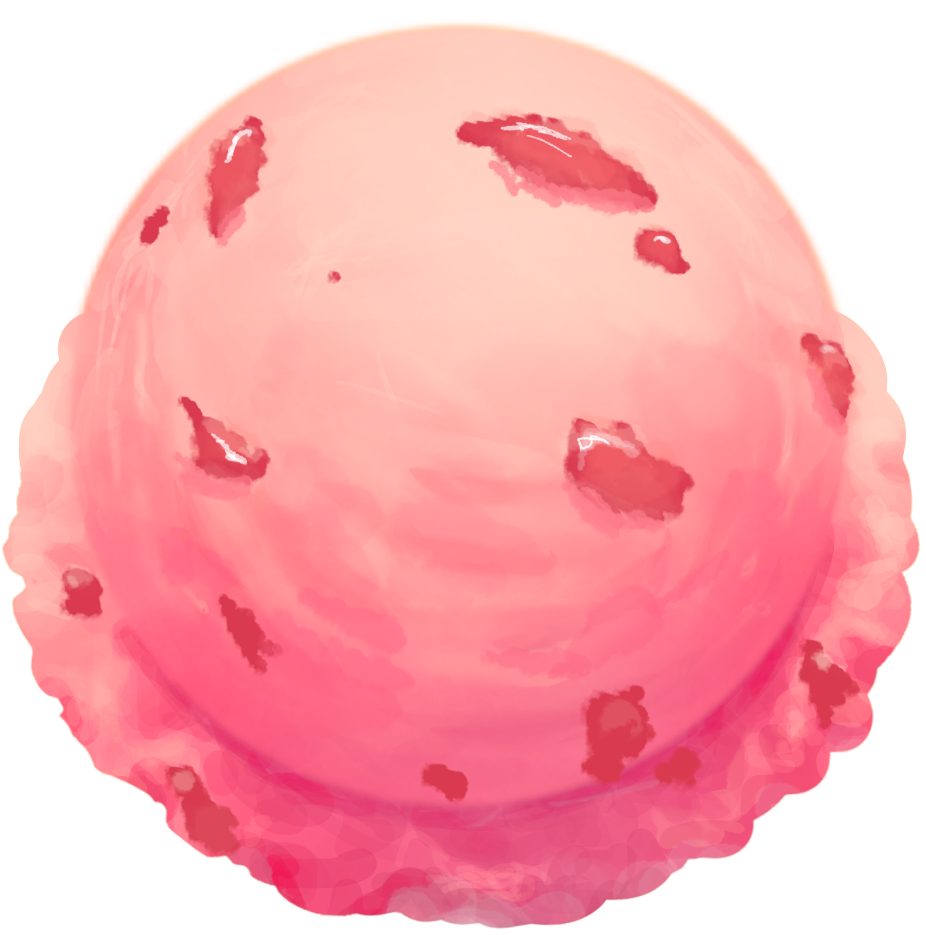
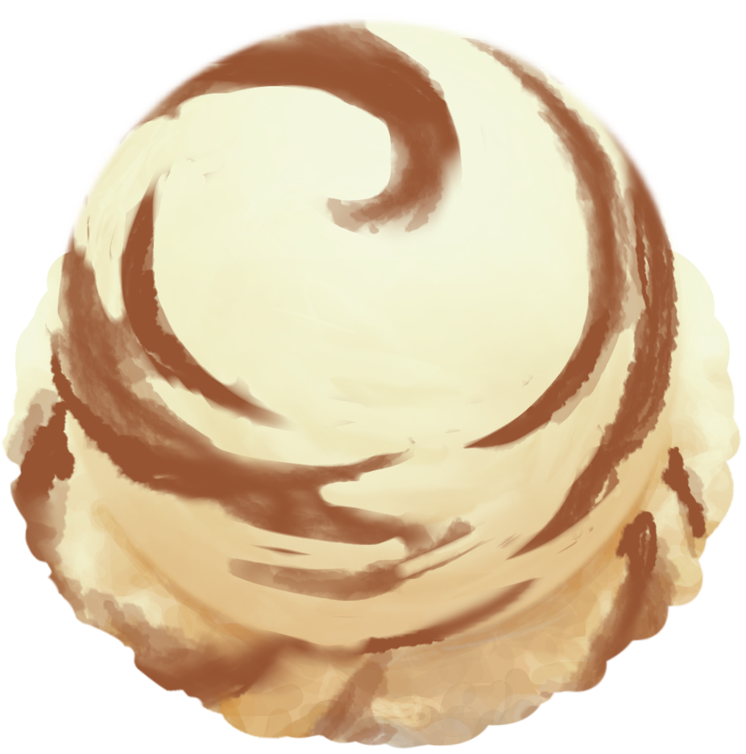
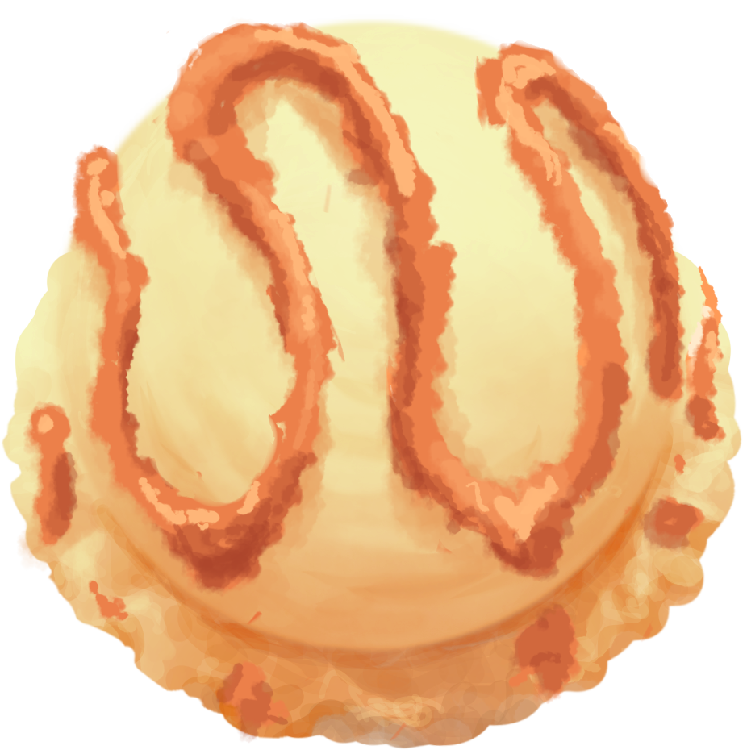
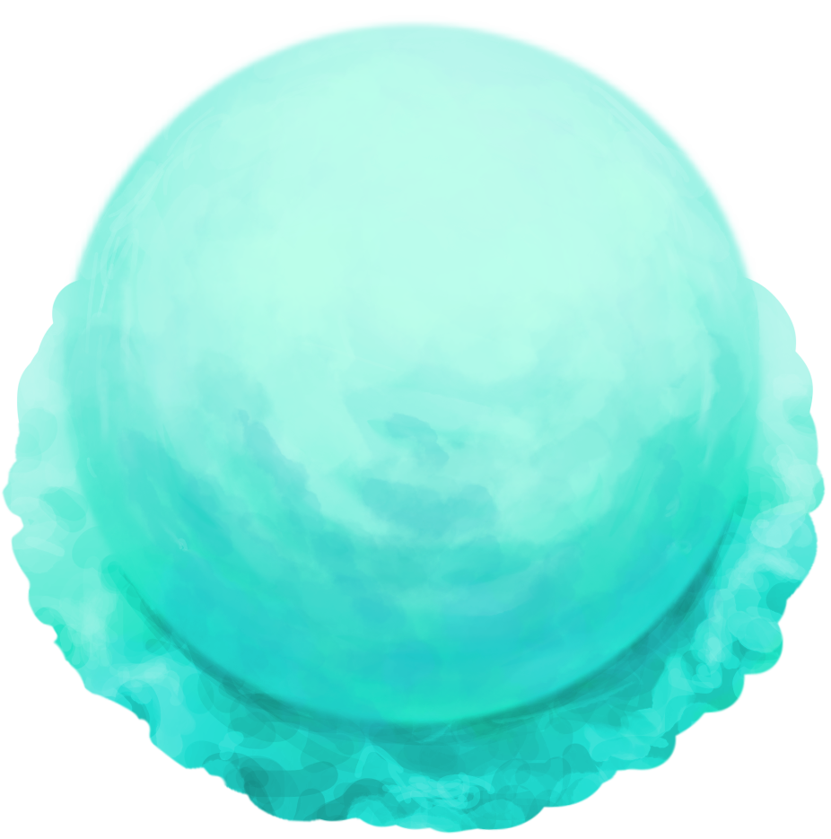
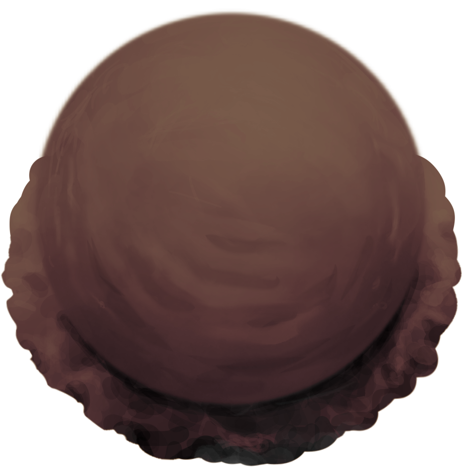

酸味よりも甘みが強く濃厚で少し大人な味わいのブラッドオレンジ味。エネルギッシュな太陽をイメージしたアイスです。

ラムネの軽い甘さと柚子の香りが合わさった、爽やかですっきりした味わい。水星をイメージしたアイスです。

さっぱりしたレモンをベースに濃厚なはちみつを加えました。金星をイメージしたアイスです。

チョコミントに少しバニラを加え、リアルさを意識。地球をイメージしたアイスです。
甘すぎないふんわりとした優しいバニラ。月をイメージしたアイスです。

甘めの苺アイスをベースに、酸味のある苺の果肉も加えて苺づくしに。火星をイメージしたアイスです。

ほろ苦さとまろやかな甘みが広がるティラミス味。木星をイメージしたアイスです。

キャラメルアイスに、キャラメルをトッピングしてキャラメルづくしに。土星をイメージしたアイスです。

さわやかで、どこか懐かしい夏を感じるメロン味。天王星をイメージしたアイスです。
深い甘みのあるブルーベリー味。できるだけ爽やかな味に仕上げました。まるで海のように深く青い海王星をイメージしたアイスです。

真っ暗な闇のようにほろ苦く濃厚なダークチョコ。ブラックホールをイメージしたアイスです。

バニラアイスに、カラフルなカラースプレーを散りばめさせました。星たちをイメージしたアイスです。